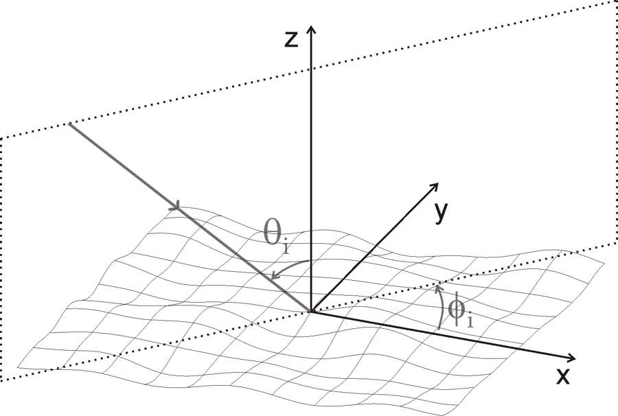
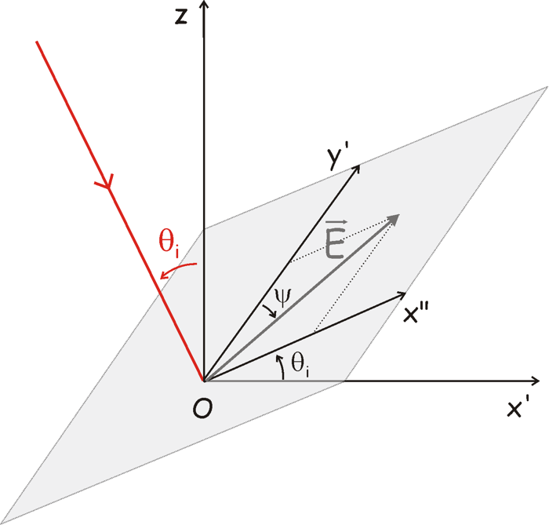
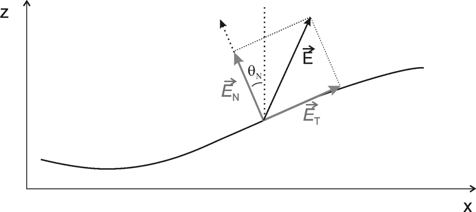
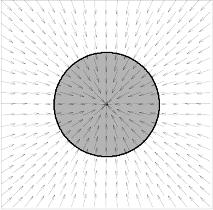

md2D and md3D compute the light diffracted by periodic or rough structures with the rigorous differential method. This manual covers what the programs compute, how to describe a structure, how to read the results and how to choose the numerical parameters.
Both programs solve Maxwell's equations in Fourier space inside the modulated region of a structure and match the solution to plane-wave (Rayleigh) expansions in the two homogeneous half-spaces around it. The only approximations are the truncation of the Fourier series and the discretisation along z. Four ingredients make the method stable, accurate and fast:
NS slices, which removes the numerical instability of thick structures [Li 1996b].Z_INVAR) for binary structures, equivalent to RCWA / the Fourier modal method.| Program | Structure | Illumination | Structure descriptions |
|---|---|---|---|
md2D | invariant along y, periodic along x (period L) | plane of incidence ⟂ grooves, TE or TM | surface h(x), stack of interfaces, index map n(x,z) |
md3D | periodic along x and y (Lx, Ly) | any θ, azimuth φ, linear polarisation ψ | surface h(x,y), stack of interfaces, z-invariant index map n(x,y) |
Conical incidence on a one-dimensional grating is computed with md3D and Ny = 0. A non-periodic object (rough surface, isolated defect) is computed as one period of a large artificial period L. The Fourier discretisation makes every structure periodic, and the scattered intensity is recovered from the efficiencies (§ 6).
The code comes from L. Arnaud's PhD work at Institut Fresnel (Marseille, 2004–2008; thesis in French [Arnaud 2008]), with later additions up to 2019. The thesis chapters used here are 1 (classical formulation), 2 (stable algorithms and validation), 3 (conical incidence) and 4 (three-dimensional method). Part 2 of the thesis contains applications: scatterometry, rough surfaces, rough gratings.
Requirements: a C compiler (gcc), FFTW 3, BLAS and LAPACK. On Debian or Ubuntu: apt install build-essential libfftw3-dev libblas-dev liblapack-dev. An optimised BLAS such as OpenBLAS makes the 3D program much faster.
make -C md2D # builds md2D/md2D
make -C md3D # builds md3D/md3D
make -C utils profilGen lire_tab lire_tab2 refractive_index # optional helpers (no default target)Library choices are switches at the top of the md2D and md3D Makefiles (HAVE_BLAS, HAVE_LAPACK, HAVE_MKL, HAVE_ATLAS). The default uses plain BLAS/LAPACK.
md2D -param my_param.txt # default: md2D_param.txt in the current directory
md2D -param my_param.txt -N 60 -pola TM -lambda 0.55
md3D -param my_param.txt -Nx 8 -Ny 8 -psi 90Any parameter can be given on the command line as -key value, and the command line wins over the file. Complex indices are split on the command line: -n_sub_re 1.3 -n_sub_im 7.1 for md2D, -nu_sub_re / -nu_sub_im for md3D. This makes scans easy to script (Practical guide).
Results go to <profile_name>.txt in the current directory, and an existing file with that name is overwritten. The terminal shows progress and a summary. verbosity 0, 1 or 2 controls the amount.
Aluminium sinusoidal grating of Tayeb (1994), TE, normal incidence. Copy the profile file md2D/sin_2048.txt, which ships with the code, next to the parameter file.
# tayeb_alu.txt
n_super = 1.0 + i0.0
n_sub = 1.3 + i7.1 # aluminium at 0.6 µm
L = 0.8333333
h = 0.8
lambda = 0.6
theta_i = 0.0
pola = TE
i_field_mode = PLANE_WAVE
calcul_type = STD
calcul_method = RK4
fft_filter = NONE
smoothing = 0
N = 40
NS = 1000
delta_h = 0.0001 # required, not used
profile_name = alu_TE ; profile_file = sin_2048.txtRun md2D -param tayeb_alu.txt; it takes about a minute. The file alu_TE.txt then contains eff_r = 0.31553 0.17990 0.31553 for orders −1, 0, +1, against 0.31558 / 0.18016 from the method of fictitious sources.
lambda, L/Lx/Ly and h use the same one. Angles are in degrees.1.3 + i7.1. Write them a + ib or a - ib, with or without spaces; a + bi, a + b*i and a plain real number (1.5) are accepted too. The same forms work wherever a complex value is read: parameter files, structure files and the command line.

The incident field is
Ei = (cos θ cos φ sin ψ − sin φ cos ψ) ex + (cos φ cos ψ + cos θ sin φ sin ψ) ey + sin θ sin ψ ez.
md2D has no phi_i or psi. Its polarisation is set by pola = TE (E ∥ y) or pola = TM (H ∥ y).
A parameter file is plain text with lines key = value. Several pairs may share a line when separated by ;. Text after # is a comment. If a key appears twice, the first occurrence wins. Keys are case-sensitive.
theta = 30 leaves theta_i missing (an error) or, for optional keys, at its default value. The parameter summary printed with verbosity = 2 shows what was actually read.| Key | Values | Meaning | |
|---|---|---|---|
profile_file | req | path | structure file (§ 5) |
profile_name | req | text | results are written to <profile_name>.txt |
lambda, L | req | length | wavelength in vacuum, period |
h | req | length or AUTO | thickness of the modulated zone; the profile is rescaled to [0, h]. AUTO keeps the height found in the file |
theta_i | req | degrees | angle of incidence |
pola | req | TE | TM | polarisation |
n_super, n_sub | req | complex | superstrate and substrate indices |
N | req | integer or AUTO | truncation: orders −N…N are kept (2N+1 harmonics) |
NS | req | integer or AUTO | number of S-matrix slices = number of integration steps |
calcul_type | req | STD | NEAR_FIELD | efficiencies; or efficiencies plus field maps. GUIDED, SWIFTS, I_SWIFTS are undocumented research modes |
calcul_method | req | RK4 | Z_INVAR | IMPROVED_RCWA | integration scheme (§ 7). IMPLICIT_RK, EULER, EULER2 exist but are not validated |
i_field_mode | req | PLANE_WAVE | only plane waves are implemented |
fft_filter | req | NONE | HAMMING | optional Hamming window on the Fourier coefficients of the permittivity |
delta_h | req | length | read but not used (one integration step per slice) |
smoothing | opt | 0 | 1, default 0 | 1 adds a transition layer of thickness l_smooth that smooths the permittivity at interfaces (convergence aid for metals) |
verbosity | opt | 0 | 1 | 2 | terminal output, default 2 |
sigma0_normed | opt | complex | σ₀/k₀; replaces theta_i and allows an evanescent incident wave (|σ₀/k₀| > ν₁) |
imposed_S_steps | opt | AUTO | FROM_FILE | put slice boundaries on horizontal interfaces (multilayers); with hmin_Sstep, imposed_S_steps_filename |
md3D uses nu_… instead of n_… for indices and has no pola, fft_filter or smoothing.
| Key | Values | Meaning | |
|---|---|---|---|
profile_file, profile_name | req | path, text | as in md2D |
lambda, Lx, Ly | req | length | wavelength, periods. With Ny = 0, Ly is arbitrary |
h | req | length or AUTO | thickness of the modulated zone |
coef_h | opt | number, default 1 | multiplies h and the profile heights |
theta_i, phi_i, psi | req | degrees | incidence, azimuth, polarisation (§ 3) |
nu_super, nu_sub | req | complex | superstrate and substrate indices |
Nx, Ny | req | integers | truncation along x and y: (2Nx+1)(2Ny+1) harmonics |
NS | req | integer or AUTO | number of slices = integration steps |
calcul_type | req | STD | only mode |
calcul_method | req | RK4 | Z_INVAR | Z_INVAR for z-invariant index maps |
i_field_mode | req | PLANE_WAVE | |
delta_h | req | length or AUTO | not used (a warning says so) |
verbosity | opt | 0 | 1 | 2 | default 2 |
AUTO values (both programs): NS = ⌈5 h |ν_sub| / λ⌉, i.e. slices of about λ/(5|ν|). This is enough for rough work on dielectrics and too coarse for metals in TM. N = AUTO (md2D) keeps all propagating orders plus max(3, 10 %) evanescent ones.
A structure file starts with a few key = value lines, followed by a labelled array of numbers separated by blanks or line breaks. The heights in a profile are shifted and scaled to span [0, h], so only the shape matters. The optional keys h_min / h_max in the file extend the modulated zone beyond the profile, which is useful for near-field maps.
N_x equidistant points over one period.
type_profil = H_X
N_x = 2048
profil =
0.500000
0.501534
...N_layers materials bounded by N_layers + 1 interfaces. There is one line per x point and one column per interface, ordered from top to bottom. Layer j, of index nj, lies between columns j and j+1; the superstrate is above column 1 and the substrate below the last column. Interfaces may touch (zero thickness) but must not cross. Example: a lamellar line of index n1 on the substrate (profilGen CARRE02_B):
N_x = 1024
type_profil = MULTICOUCHES
N_layers = 1
n1 = 9.128 + i66.433
profil =
0.2 0.2 # no line here: layer 1 has zero thickness
...
0.2 0.0 # line of material n1 from z = 0 to 0.2
...N_x, N_z and arrays Re_n_xyz and (optionally) Im_n_xyz, row by row from the top (z = h) down, x varying fastest. TE only: no normal-vector field is defined for this type.The normal vector needed in TM is computed automatically from h(x) by centred finite differences. For stacks it is interpolated between the interfaces.
profile_type = H_XY, Nprx, Npry, then profil = followed by Npry rows of Nprx values (x along a row). The normal field is computed automatically, so no separate normal-vector file is needed. Npry = 1 describes a 1D profile, used for conical incidence with Ny = 0.Nprx, Npry, N_layers, n1…h). The file lists indices n1 = …, n2 = …, then profile_type = N_XY_ZINVAR, Nprx, Npry, Nprz = 1, then n_xyz = followed by an integer map (1, 2, …) referring to those indices. Re_n_xyz/Im_n_xyz arrays can be given instead. Use calcul_method = Z_INVAR and NS = 1.

N_XY_ZINVAR md3D uses a radial normal field centred on the cell. It suits a centred round inclusion [Schuster 2007] and nothing else (§ 8).N_XYZ (non-invariant 3D index map) and H_XY_plus_STACK are parsed by md3D but have no validated normal field or energy balance; treat them as experimental.
utils/profilGen TYPE [options] > file writes md2D profiles: SINUS01, SINUS02, CARRE01/02/03 (lamellar), RECTANGLE04, TRAPEZ01/02, FINITE_GRATING_B, ALEAT01 (random rough profile), ORIGAMI… The number of points is set with -N_profil, geometry with -L1 -h1 -h2 -alpha…thesis_validation_cases/tools/mkprofile.py (Python, no dependencies) writes an echelette (md2D), a rectangular pyramid (md3D H_XY) and a circular hole map (md3D N_XY_ZINVAR).md2D/ (sin_2048.txt, cos_256.txt, sinLayer_2048.txt) and md3D/ (pr_sin3D_256x256.txt, carre_256_1D.txt).The result file repeats the parameters, then lists the results as labelled arrays:
| Label | Content |
|---|---|
sum_eff, one_minus_sum_eff | total efficiency and its departure from 1 (absorption, or numerical error in lossless cases) |
somm_eff_r, somm_eff_t | total reflected and transmitted efficiency |
N_eff_r, theta_r, eff_r, arg_Ar | md2D, reflected propagating orders: order number, angle (deg), efficiency, phase of the amplitude (rad) |
N_eff_t, theta_t, eff_t, arg_At | md2D, same for transmission |
eff_r, nx_eff_r, ny_eff_r (and _t) | md3D: 2D tables, one printed row per ny. Entries inf mark evanescent orders inside the rectangle of printed indices |
eff_t and theta_t are not meaningful (the transmitted waves are evanescent, and nan may appear). Use the reflected efficiencies; the absorption is 1 − Σer.cat res.txt | utils/lire_tab eff_r prints one array, and thesis_validation_cases/tools/mdres.py reads an efficiency by order from Python.calcul_type = NEAR_FIELD, md2D). Besides the result file, the program prints field maps to the terminal on an NS × N_x grid: ReEx ImEx ReEz ImEz ReHpy ImHpy in TM, ReEy ImEy ReHpx ImHpx ReHpz ImHpz in TE. Hp is the magnetic field scaled by the code's normalisation. Redirect the output to a file and extract each map with utils/lire_tab2 ReEx. A complete example is in Applications/ExempleUtilisationNearField/.Three numbers control accuracy and cost: the truncation N (or Nx, Ny), the number of slices NS, and the sampling of the structure file. In the current code each S-matrix slice is integrated by exactly one Runge–Kutta step. The thesis's separate integration step Δh is therefore h/NS, and delta_h is ignored.
| Parameter | Effect | Guidance (from the thesis and the 2026 reproduction) |
|---|---|---|
N | md2D cost ∝ N³·NS; md3D cost ∝ ((2Nx+1)(2Ny+1))³·NS | Dielectric gratings: errors below 10⁻⁵ once all propagating orders plus a few evanescent ones are kept. Metals: ≈10⁻³ at N = 20, ≈10⁻⁴ at N = 40–50. Energy conservation does not detect a too-small N, so always compare two values of N. |
NS | cost ∝ NS; errors of the RK4 scheme | Dielectric, h/NS = λ/200: ≈10⁻⁵; λ/2000: ≈10⁻⁶; λ/10 000: ≈10⁻⁸. Metal in TM: h/NS ≤ λ/700 (NS = 100 diverged for h = 1.3λ). 1 − Σe is a good indicator here. |
| profile points | the Fourier coefficients of the permittivity and the normal are computed from the samples | Use many more points than harmonics. 256 points at N = 100 cost 2 % on weak orders; with 2048 points the results agreed with an independent method to 10⁻⁸. For md3D, 256–512 points per side. |
calcul_methodRK4 is the general method for any profile, and the one to use for curved or sloped interfaces.Z_INVAR treats each slice as z-invariant and propagates it exactly, as RCWA / the Fourier modal method does. It is exact and fast for binary structures (lamellar gratings, holes; NS = 1 per invariant layer). On a curved profile it is a staircase approximation. That remains acceptable in TE with many slices, but converges very slowly in TM because the staircase never has the right normal [Popov 2002; Arnaud 2008 § 2.4].IMPROVED_RCWA (md2D) uses z-invariant propagation with the true normal field of the profile.Measured with reference BLAS on a shared 8-core PC: md2D, N = 40, NS = 1000, TE, about 1 min (TM about twice as long); N = 100, NS = 1000 takes 10–20 min. md3D pyramid with NS = 20 takes 1.5 min at N = 5 and 22 min at N = 9; N = 15 needs about 10 h per point. The thesis reported 13.7 h at N = 15, NS = 50 on a 2008 Opteron.
PLANE_WAVE) is implemented.Ny = 0.delta_h is required but unused in both programs.N_XYZ has none (TE only). md3D N_XY_ZINVAR uses a hard-coded radial field centred on the cell (Normal_N_XY_ZINVAR in md3D.c); the code that would read norm_x/norm_y from the structure file is never reached. Any other shape needs a code change.N_XYZ, H_XY_plus_STACK (a sample run violates energy conservation), md2D GUIDED/SWIFTS modes and the IMPLICIT_RK/EULER schemes.The thirteen validation tables of the thesis were recomputed with the current code in September 2026. Nine are reproduced within the precision the thesis claims, one agrees to 0.01–0.3 % (conical incidence, originally computed with a code that no longer exists), and two could be checked only in part (the shooting-method column and absolute timings). The comparisons cover the method of fictitious sources, the integral method, RCWA, the Chandezon method, the method of variation of boundaries, GSolver, Schuster et al., energy conservation and reciprocity. The deep-aluminium table (4.6) is still to be run.
REPRODUCING.md and one run.sh per case in thesis_validation_cases/. Each case is a complete, runnable example of a parameter file and a structure.references/Arnaud_2008_PhD_thesis.pdf).